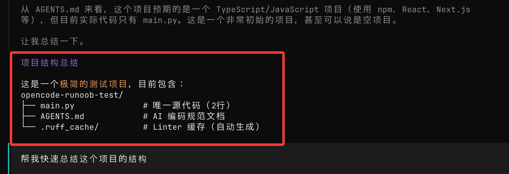

OpenCode TUI (Interfaz de terminal)
OpenCode proporciona una interfaz de terminal interactiva (TUI, Terminal User Interface) para colaborar de manera eficiente con la IA en el desarrollo desde la línea de comandos.
TUI es la forma principal de usar OpenCode; todo el análisis, modificación y ejecución de código se realiza a través de esta interfaz.
OpenCode TUI es esencialmente un terminal de conversación con IA que puede ejecutar comandos, fusionando el desarrollo, la línea de comandos y la IA.
Todos los comandos de TUI usan la barra diagonal/para invocarse.
Al escribir en el campo de entrada de TUI,/se listarán los comandos sugeridos:

Comandos de OpenCode TUI
A continuación se muestra una tabla de los comandos de OpenCode TUI:
| Comando | Descripción | Atajo de teclado |
|---|---|---|
/connect |
Agregar proveedor de LLM y configurar API Key | — |
/compact (/summarize) |
Comprimir el contexto de la sesión actual | ctrl + x → c |
/details |
Alternar la visualización de detalles de ejecución de herramientas | ctrl + x → d |
/editor |
Abrir editor externo para escribir mensajes | ctrl + x → e |
/exit (/quit / /q) |
Salir de TUI | ctrl + x → q |
/export |
Exportar la conversación actual como Markdown | ctrl + x → x |
/help |
Abrir panel de ayuda | ctrl + x → h |
/init |
Crear/actualizar AGENTS.md | ctrl + x → i |
/models |
Listar modelos disponibles | ctrl + x → m |
/new (/clear) |
Nueva sesión | ctrl + x → n |
/redo |
Rehacer las/undooperaciones deshechas |
ctrl + x → r |
/sessions (/resume / /continue) |
Lista de sesiones y cambio | ctrl + x → l |
/share |
Compartir la sesión actual | ctrl + x → s |
/themes |
Listar/cambiar temas | ctrl + x → t |
/thinking |
Mostrar/ocultar el proceso de razonamiento del modelo | — |
/undo |
Deshacer el último mensaje (incluidos cambios de archivos) | ctrl + x → u |
/unshare |
Cancelar compartir sesión | — |
Complemento de interacción principal de TUI (comandos sin barra diagonal)
| Tipo | Sintaxis | Descripción |
|---|---|---|
| Iniciar | opencode |
Iniciar TUI en el directorio actual |
| Especificar directorio | opencode /path |
Abrir el proyecto especificado |
| Referencia de archivos | @file |
Buscar de forma difusa e inyectar el contenido del archivo |
| Ejecutar comando | !command |
Ejecutar comando de shell y devolver el resultado |
La TUI de OpenCode es esencialmente unaLLM + contexto del proyecto + gestión de estado de Git + panel de comandoscapa de interacción compuesta:
/→ Controlar el comportamiento (similar al panel de comandos del IDE)@→ Inyectar contexto (RAG a nivel de archivo)!→ Ejecutar operaciones del entorno (llamada a herramientas Shell)ctrl+x→ Prefijo para operaciones rápidas eficientes
I. Iniciar TUI
1. Iniciar en el directorio actual
opencode
Si apareceEACCES: permission denied, open ''es un problema de permisos, podemos corregir los permisos del directorio:
sudo chown -R $(whoami) ~/.localLuego ejecuta:
chmod -R 755 ~/.localTambién se puede ser más contundente, usando directamentesudo：
sudo opencode
cargará automáticamente el proyecto actual como directorio de trabajo:

2. Iniciar especificando un directorio de proyecto
opencode /path/to/project
Adecuado para cambiar rápidamente de proyecto
II. Interacción básica
Después de entrar en TUI, puedes escribir directamente en lenguaje natural:
Ayúdame a resumir rápidamente la estructura de este proyecto.
OpenCode combinará el código del proyecto para ofrecer resultados de análisis:

III. Referencia de archivos (función principal)
Puedes usar@para referenciar archivos del proyecto:
这个项目的认证逻辑是如何实现的？查看 @packages/functions/src/api/index.ts
Características:
- Admite búsqueda difusa de rutas de archivos
- Lee automáticamente el contenido de los archivos
- No es necesario copiar código
Muy adecuado para leer código desconocido
IV. Ejecutar comandos Bash
Presiona!cambiará al modo shell, y el contenido en este modo se ejecutará como comando de shell:
!
Ejecutar comando:
ls -la

El resultado de la ejecución se agregará automáticamente al contexto de la conversación.
De esta forma, podemos preguntar a la IA y ejecutar comandos del sistema al mismo tiempo.
V. Comandos de barra diagonal (comandos /)
Escribe/para ejecutar comandos integrados, por ejemplo:
/help
Abrir el panel de ayuda.
Resumen de comandos comunes
| Comando | Descripción |
|---|---|
| /connect | Configurar la API del modelo |
| /models | Ver modelos disponibles |
| /init | Inicializar la configuración del proyecto (generar AGENTS.md) |
| /new | Nueva sesión |
| /sessions | Cambiar de sesión |
| /undo | Deshacer modificaciones (incluido el código) |
| /redo | Rehacer modificaciones |
| /share | Compartir la conversación actual |
| /export | Exportar la conversación como Markdown |
| /exit | Salir de OpenCode |
VI. Atajos de teclado (mejora de eficiencia)
OpenCode admite operaciones con atajos de teclado:
| Función | Atajo de teclado |
|---|---|
| Panel de comandos | Ctrl + X → H |
| Nueva sesión | Ctrl + X → N |
| Deshacer | Ctrl + X → U |
| Rehacer | Ctrl + X → R |
| Lista de modelos | Ctrl + X → M |
Nota:
- Ctrl + X es la "tecla líder" predeterminada
- Similar al modo de atajos de Vim
VII. Integración con editores (/editor)
Puedes usar un editor externo para escribir prompts complejos:
/editor
Requiere configuración previa:
export EDITOR="code --wait"
Editores compatibles:
- VS Code（code）
- Cursor（cursor）
- Vim / Neovim
- Nano
VIII. Gestión de sesiones
Ver sesiones
/sessions
Nueva sesión
/new
Puedes cambiar entre múltiples tareas
IX. Deshacer y rehacer (importante)
Deshacer
/undo
Función:
- Deshacer mensajes
- Revertir cambios de código
Rehacer
/redo
Nota:
- Depende de Git para gestionar los cambios de código
- Se recomienda tener Git habilitado en el proyecto
X. Configuración de TUI
Puedes personalizar el comportamiento mediante el archivo de configuración:
opencode.json
Ejemplo:
{
"tui": {
"scroll_speed": 3,
"scroll_acceleration": {
"enabled": true
}
}
}
Descripción:
- scroll_speed: velocidad de desplazamiento
- scroll_acceleration: desplazamiento suave (se recomienda activarlo)
XI. Sugerencias de uso
- Usa más@la referencia de archivos para mejorar la precisión
- Para tareas complejas, usa primero el modo de plan; usaTabla tecla para cambiar de modo.
- Itera en pasos pequeños, no intentes hacer algo demasiado complejo de una vez.
- Antes de operaciones importantes, asegúrate de que Git haya hecho commit.